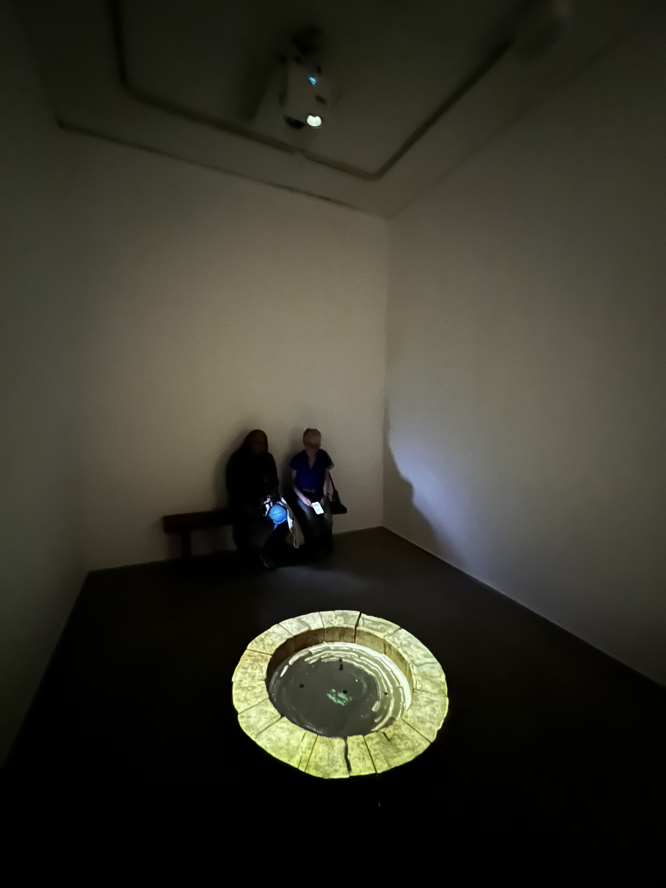

A site-specific art installation by Anna Fromchenko at The Negev Museum of Art
The Negev Museum of Art commissioned "Wishing Well," a site-specific installation by multidisciplinary artist Anna Fromchenko (b. 1952). The challenge lay in creating a poetic, immersive environment inside a gallery space that bridges existential necessity and symbolic imagery, addressing the fragility of human existence and nature.
Drawing deeply from biblical tradition and the Land of Israel space, the well image was reimagined as a meeting point of life and death, hope and loss. We designed an experience where visitors are invited to slow down and stay in the space, interacting with the installation as a metaphysical gateway of contemplation.
A physical, sculptural well was built on the museum floor, integrated with custom video art depicting slowly rising and falling water synchronised with the rhythm of breathing. Beside the well, a stone bench was positioned, accompanied by a whispering soundscape repeating lines of poetry in the background.
The installation successfully established an atmosphere of deep reflection, where the movement between fullness and depletion highlights the tension between presence and disappearance. As one of the whispered lines states: "From too much water, you cannot see the water."
